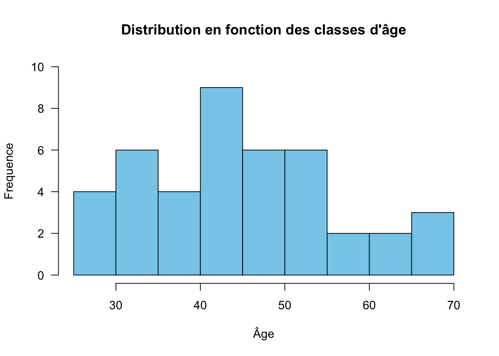
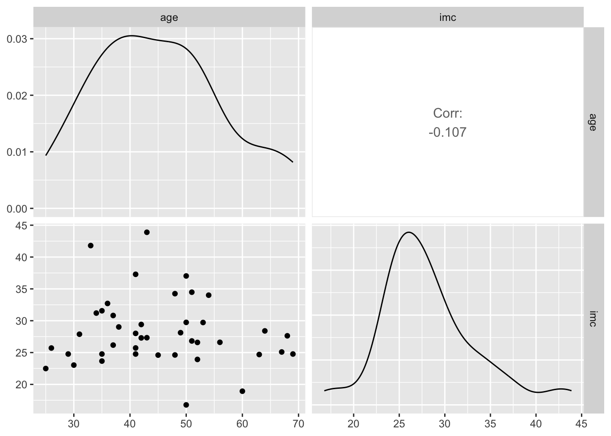

La conception d’un plan d’analyse est une étape essentielle dans la conduite de toute analyse de données. Pourtant, elle est souvent négligée, notamment par les utilisateurs occasionnels de logiciels d’analyse, comme les étudiants débutants. Un plan d’analyse bien structuré offre une feuille de route claire pour répondre aux questions de recherche ou aux objectifs de l’étude. Il se compose généralement de plusieurs parties clés, que nous explorerons dans cet article.
Pourquoi concevoir un plan d’analyse de données ?
Un plan d’analyse bien structuré agit comme une boussole, permettant de rester concentré sur les objectifs et d’éviter les pièges courants, comme l’exploration excessive ou les erreurs de traitement. Dans cet article, nous allons découvrir les éléments clés pour concevoir un plan d’analyse efficace.
Les étapes clés d’un plan d’analyse
1. Définir les objectifs de l’analyse
Proverbe
Chaque connaissance est la reponse à une question
Avant même d’ouvrir R, posez-vous les bonnes questions :
Quel est l’objectif principal de votre analyse ?
Quelles sont les hypothèses ou questions de recherche auxquelles vous cherchez à répondre ?
2. Décrire les données
Un bon plan d’analyse commence par une description détaillée des données :
Quelle est leur source ?
Quels sont les types de variables présentes (quantitatives, qualitatives) ?
Y a-t-il des données manquantes, aberantes ou des incoherences ?
Exemple
Voir le code
library(labelled) # Chargement du package labelledload("data.RData") # Chargement du jeu de donnéeslook_for(data) # Résumé de la structure des données
pos variable label col_type missing values
1 ID Identifiant du participant dbl 0
2 age Age en année dbl 0
3 sexe Sexe chr 0
4 imc Indice de masse corporelle dbl 0
5 met Participant sous Metformine chr 0
6 apri Type de fibrose selon score APRI chr 0
7 gly Apreciation de la glycémie chr 0
Cette sortie montre un aperçu de la structure d’un jeu de données que j’ai créé et appelé “data” obtenu avec la commande look_for(data) dans R. La fonction look_for du package labelled[1] est très pratique pour les débutants qui souhaitent explorer leurs données.
Chaque ligne correspond à une variable (ou colonne) du tableau (jeu de données), avec des informations clés : son nom (variable), une description simplifiée (label), son type (col_type, par exemple dbl pour des données numériques variable quantitative ou chr pour du texte variable qualitative), et le nombre de valeurs manquantes. Par exemple, on y voit que la variable age représente l’âge des participants en années et contient uniquement des données numériques sans valeur manquante. Ce type de résumé aide à comprendre rapidement la composition des données, à repérer d’éventuelles anomalies, et à planifier les étapes d’analyse avec plus de clarté.
3. Planifier les étapes d’analyse
Pré-traitement des données : nettoyage, gestion des valeurs manquantes et transformation des variables [fera l’objet d’un post insha Allah].
Analyses descriptives : explorer les tendances générales.
Exemple : La distribution de l’age
Voir le code
# Histogramme de la variable agehist(data$age,ylim =c(0,10),main ="Distribution en fonction des classes d'âge", xlab ="Âge", ylab ="Frequence",col ="skyblue",las =1)

Analyses spécifiques : appliquer les tests ou modèles statistiques nécessaires pour répondre aux objectifs.
Exemple avec GGally[2] : La correlation entre l’age et l’IMC
Voir le code
# Chargement du package necessairelibrary(GGally) # Visualisation graphique de la correlationggpairs(data[, c("age", "imc")])

4. Préparer la présentation des résultats
Enfin, anticipez la présentation des résultats : quels graphiques, tableaux ou métriques permettront de transmettre vos conclusions efficacement ?
library(ggplot2)library(plotly)ggplotly(ggplot(data) +aes(x = age, y = imc) +geom_point() +geom_smooth(method ="lm", col ="indianred2") +labs(title ="Relation entre l'âge et l'indice de masse corporel",x ="Âge", y ="IMC") +theme_light())
Exemple 2 avec gtsummary[5] : Repartition des participants en fonction de l’appreciation de la glycemie, du sexe, du type de fibrose et de la prise de Metformine
Checklist pour concevoir un plan d’analyse de données
Voici une checklist rapide pour vous aider à structurer vos analyses de données. Prenez le plaisir de cochez chaque étape au fur et à mesure :
Définir les objectifs de l’analyse
Avez-vous clairement identifié la question ou l’hypothèse à tester ?
Les objectifs sont-ils réalistes compte tenu des données disponibles ?
Décrire les données
Avez-vous examiné la source et la qualité des données ?
Connaissez-vous les types de variables présentes (quantitatives, qualitatives) ?
Avez-vous repéré les valeurs manquantes ou aberrantes ?
Planifier les étapes d’analyse
Avez-vous préparé les données (nettoyage, transformation, etc.) ?
Avez-vous réalisé des analyses descriptives pour mieux comprendre vos données ?
Avez-vous sélectionné les méthodes statistiques ou les modèles adaptés à vos objectifs ?
Organiser la présentation des résultats
Avez-vous préparé des graphiques ou des tableaux pour illustrer vos conclusions ?
Vos résultats sont-ils présentés de manière claire et concise ?
Vérifier la reproductibilité
Avez-vous documenté votre code et votre méthodologie ?
Votre analyse peut-elle être facilement reproduite par quelqu’un d’autre ?
La checklist est là pour vous guider et vous assurer que vous n’oubliez aucune étape clé. Si vous débutez, gardez en tête qu’il est normal de tâtonner un peu au départ. Plus vous pratiquerez, plus ces étapes deviendront naturelles !
Conclusion
La conception d’un plan d’analyse est une compétence cruciale pour quiconque souhaite réaliser des analyses de données de manière rigoureuse et reproductible. Bien qu’elle demande un investissement initial en temps et en réflexion, elle permet d’éviter des erreurs coûteuses et d’obtenir des résultats clairs et exploitables.
Vas-y
Pour toute suggestion ou proposition, écris-moiMail.
Schloerke B, Cook D, Larmarange J, Briatte F, Marbach M, Thoen E, et al. GGally: Extension to ggplot2 [Internet]. 2024. Available from: https://ggobi.github.io/ggally/
3.
Wickham H, Chang W, Henry L, Pedersen TL, Takahashi K, Wilke C, et al. ggplot2: Create elegant data visualisations using the grammar of graphics [Internet]. 2024. Available from: https://ggplot2.tidyverse.org
4.
Sievert C, Parmer C, Hocking T, Chamberlain S, Ram K, Corvellec M, et al. Plotly: Create interactive web graphics via plotly.js [Internet]. 2024. Available from: https://plotly-r.com
5.
Sjoberg DD, Larmarange J, Curry M, Lavery J, Whiting K, Zabor EC. Gtsummary: Presentation-ready data summary and analytic result tables [Internet]. 2024. Available from: https://github.com/ddsjoberg/gtsummary